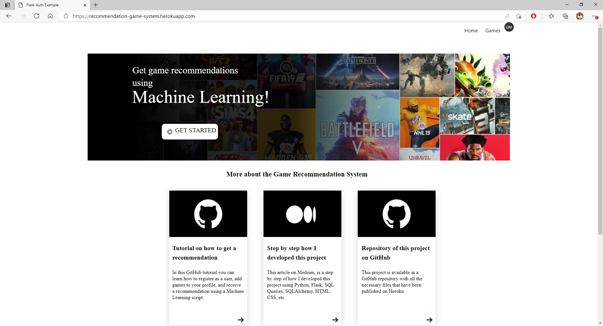
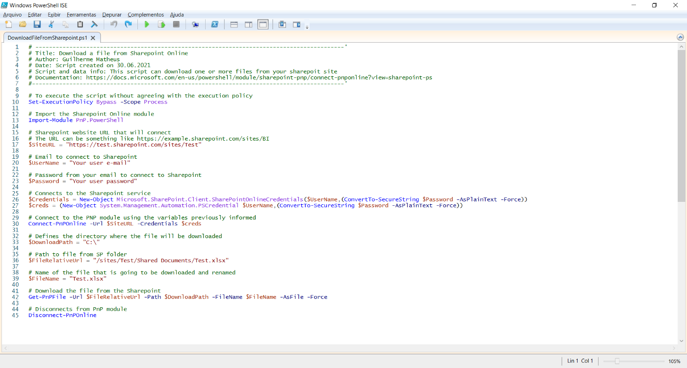
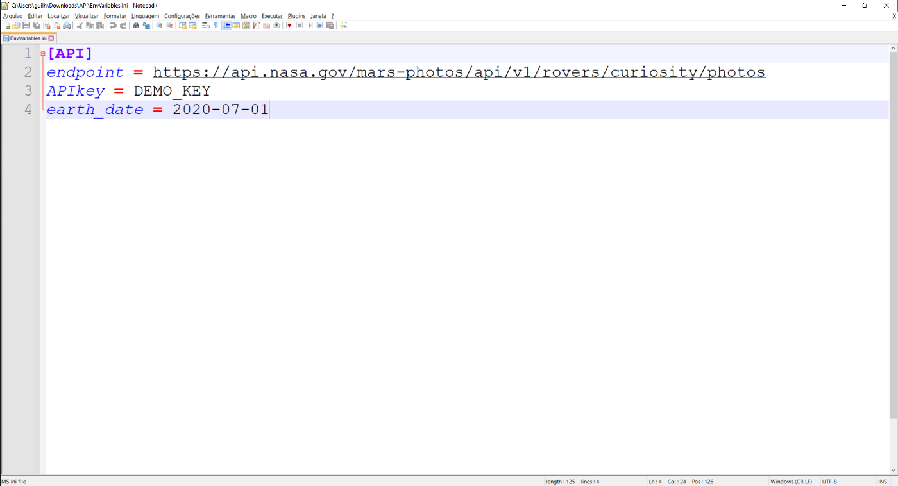
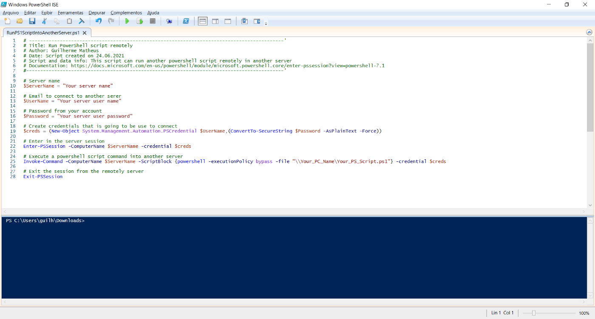
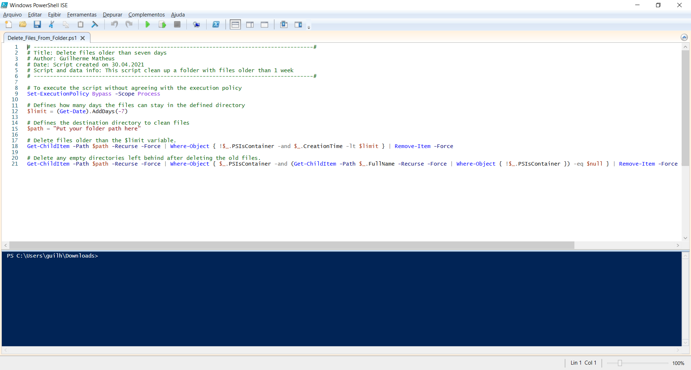

Game Recommendation
System
This project is about a game recommendation system that I developed to put into practice some Machine Learning techniques,
so the goal is for the user to add the games that have already been played by him and add it to his profile,
and later receive the recommendation of new games.

Download file from Sharepoint
from a Powershell script

With this project you can download a file from Sharepoint from a PowerShell script.
How to use ConfigParser module
(.ini file) in Python

With this project, you can load a separate file with .ini extension and load into your Python script.
How to run PowerShell
script remotely

This project provides a PowerShell script that I use to run another PowerShell script into another Windows server (remotely).
Delete files from folder
older than any days

In this project With a PowerShell script you can delete files from folder within a certain time period. You just have to define how many days you want to filter to delete files.